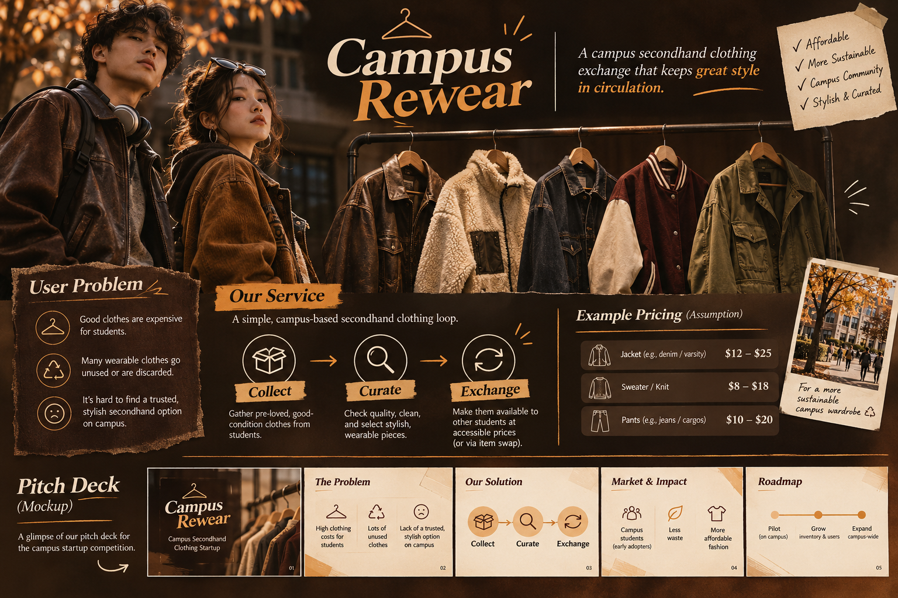

用户与问题
识别同龄人处理闲置衣物时的真实障碍，并区分事实与假设。
固定挑战：围绕校园闲置衣物设计二手潮流服务，面对同龄用户提出有理由的方案，而不是只做品牌名称。
呈现目标用户、闲置衣物流转、品牌视觉和价格假设，再进行推介。

成果可作为创业想法的起点或展示材料；是否有人愿意使用或付费，需要课后向真实用户验证。
说明目标用户、问题、服务流程、价格假设和下一步验证；现场回答同伴问题，记录至少一项修改。
课堂产出是概念方案，非已验证生意；无需搭建交易网站或真实支付。
闲置衣物如何被更多人再次使用，是一个贴近校园生活的商业问题。学生需要思考真实用户，而不是只生成一个好看的品牌名字。
用展示板向同学介绍用户问题、服务流程、品牌和价格假设，接受提问并修改；课后可用方案开展真实访谈。
方案是概念初版；价格和需求是待验证假设，不包含真实支付或交易网站。
学生负责关键判断，用 AI 帮忙制作、测试与修改。
识别同龄人处理闲置衣物时的真实障碍，并区分事实与假设。
用 AI 探索品牌与服务流程，比较选择并说明理由。
面对质疑，调整方案并设计后续用户访谈。
0:00–1:00 理解挑战与开始制作 / 1:00–1:10 休息 / 1:10–2:00 制作 / 2:00–2:20 休息 / 2:20–3:05 测试与改进 / 3:05–3:15 休息 / 3:15–4:00 展示与反馈
把这次的方法用到你关心的领域。